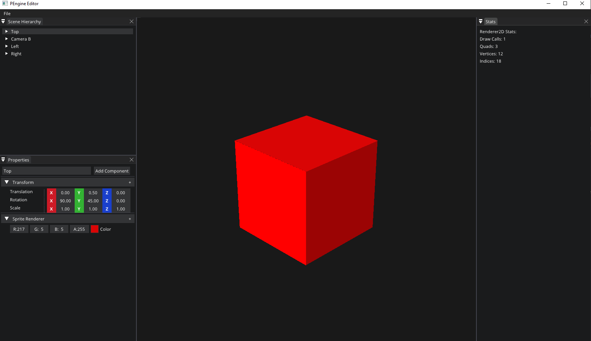
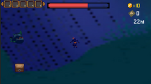
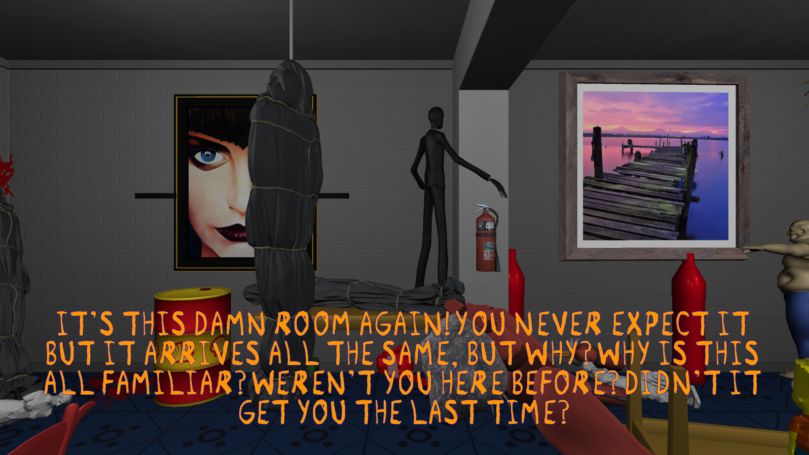
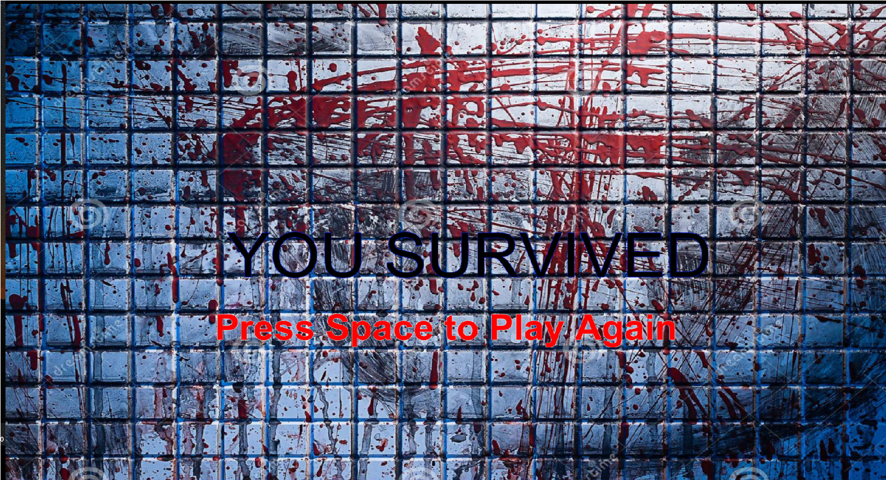

Welcome! I am Thai, it's great to have you here that you may want to take a look at my portfolio. I'm a senior student from the University of Manitoba that will be graduating in April 2022. My first game development experience was in 2018 and since then, I'm continuously working on game-related projects.
I'm currently looking for a new grad/junior position in game development as a generalist/tools programmer. If you are looking for one, I believe I am a quality choice because of my passion for games and my experience in game development.
Portfolio
Unknown Realm (On-going)
C++Unreal Engine 4Blueprint
A co-op multiplayer tower defense based game combined with RPG system such as crafting, inventory, weapon systems. Currently working on the AI behaviors of wave monsters.
● Crafting System: Synchronized resources between all players with one shared inventory. And any resource gathering/consuming will update automatically between players.
● Weapon System: Multiple weapons with unique mechanics such as the combo system for melee weapons that can transition from many combinations of light attacks and heavy attacks or the aiming precision of bow to determine final damage.
PEngine
C++OpenGLImGuiEnTTPremakeYAML-cppWindows
A game engine developed by following Hazel to learn more about fundamentals of an engine. It has an editor inspired both by Unreal and Unity. You can create/delete/add components to an entity and interact with the editor camera from the viewport.

Abyssal Secrets
LudumDare 48UnityC#WindowsMac
An ocean exploring game that you need to find all mysterious artifacts while facing different kinds of creatures. Made by a team of four (2 programmers and 2 composers) in the LudumDare 48 jam. The largest game jam I have ever participated with thousands of submissions. The game received quite a lot of good feedback as well!

Find Or Die
UnityC#WindowsMac
A deja-vu theme game that you need to find a shapeshifting monster trying to kill you. Every time the light goes off, it will change its shape and you must notice the difference in the room. Made by a team of three in a two-day Berkeley music game jam.


Brain Challenges
UnityC#Android
A brain-skill based mobile game with many different modes and each mode has different levels. The higher the level, the harder the game is. You will have 3 chances for your mistakes.